Evolution Based Weight Vector Optimization
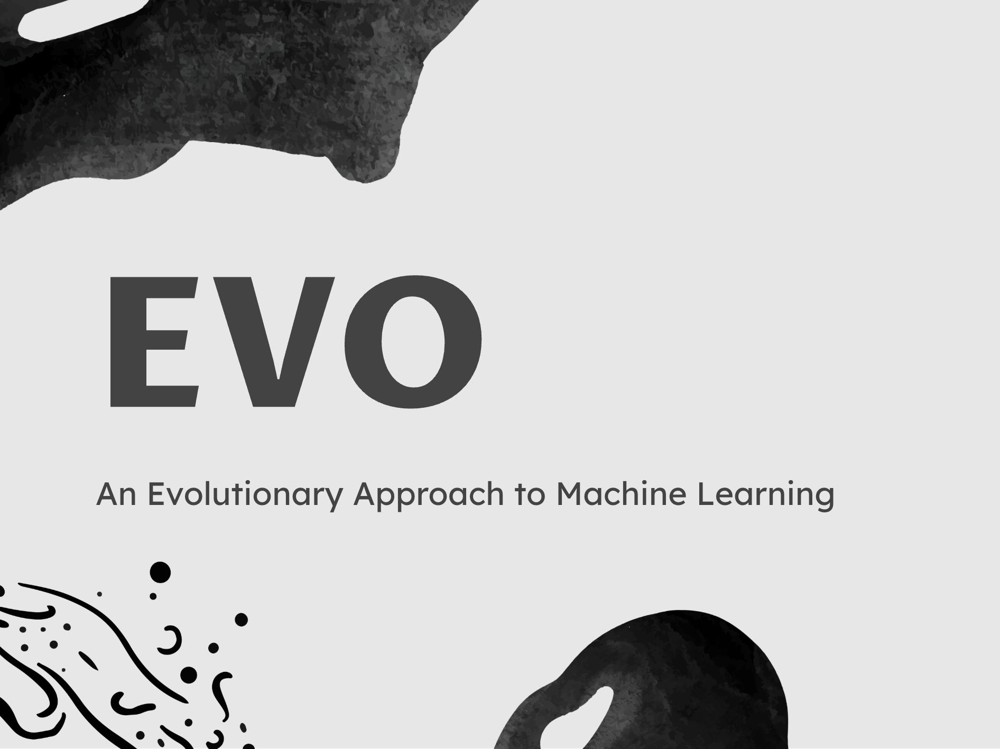
Abstract
This blog post explores the application of the principals of evolution to weight vector optimization problems. A comprehensive evolutionary optimizer class, with hyperparameters allowing for control over selection, inheritance, diversity, mutations rates, and mutation styles, was created. Exploratory experiments were then run to attempt to understand the strengths and limitations of the various values for each of these hyperparameters. Experiments were performed on generated data as well as the MNIST dataset. Due to computation limitations, a complete optimization loop on the MNIST dataset was out of scope for this project. However, a final accuracy of 82% was achieved.
Introduction
This blog post explores how features of evolution in nature can inspire solutions to overcoming the shortcomings of gradient descent. Gradient Descent only works on differentiable loss functions, meaning it can become stuck in local loss minima when attempting to model non-convex loss functions. In other words, gradient descent cannot explore the entire solution space on nondifferentiable loss functions. This limitation can be overcome by harnessing the characteristics of evolution and natural selection in nature. Evolution has a wide variety of applications concerning Machine Learning, but this project focuses on its applications to weight vector optimization Telikani et al. (2021).
Lewontin identifies 3 key population characteristics for evolution: phenotypic variation in a population, differential fitness, and fitness must be heritable Lewontin (1970). With these 3 characteristics, evolution then occurs as ‘fitter’ individuals are better able to pass on their traits to future generations, while less fit individuals are not. At the individual level, evolution requires a blueprint, self-replication, mutation, and selection. By applying these principles to machine learning models, this blog post explores the strengths and limitations of evolutionary principles when applied to weight vector optimization in machine learning. To satisfy the requirement of phenotypic variation, each evolutionary optimizer has an entire population of weight vectors storing different weights. The different weights result in different losses, which in combination with selection pressures regarding the resulting different losses, satisfy the differential fitness requirement. With weight vectors serving as our genetic blueprint, those weight vectors can be duplicated to create or refill the population of weight vectors. Slight random adjustments to those weight vectors during replication serve as the mutations, ensuring the continuation of phenotypic variation. A variety of methods can be used to eliminate population vectors during an iteration, including loss and diversity, which function as selection. Eliminating high-loss weight vectors allows only vectors with high accuracy to pass on their characteristics, while eliminating low diversity can ensure that the solution space is adequately explored. Through the implementation of hyperparameters, many variations of evolutionary machine learning algorithms are explored to better understand their strengths and weaknesses.
The many hyperparameters are then tested on both generated and real data from the MNIST dataset to develop initial hypotheses regarding the optimal parameterization for evolutionary weight vector optimization to succeed.
Values Statement
The potential users of the evolutionary-based weight vector optimization class are researchers, data scientists, and developers, especially those who work on non-differentiable problems with which gradient descent-based solutions struggle. Our class provides both a potential solution to overcoming the limitations of gradient descent on non-differentiable classification problems and serves as a potential benchmark against which other algorithms can be compared.
One major potential impact of the widespread use of our algorithm, or similar ones, is the increase in computational power required to run them. Because each epoch of an evolutionary algorithm requires the computation of an entire population of new weight vectors, the computational power required for an epoch is higher than most algorithms. This has potential positive implications for the manufacturers of computational chips and the owners of servers. On the other hand, the potential negative effects of increased energy and material consumption to perform these computations cannot be overlooked either.
Because the majority of our work was focused on the creation of a class, and not the optimization of a specific algorithm, the potential for positive and negative impacts of our class depends on who gains access to the class and what they decide to do with it.
Materials and Methods
Project dependencies: - torch - numpy - pandas - scikit-learn - matplotlib
Our evolutionary optimizer translates biological principles into a deep neural network optimiser. Biological evolution, and thus our algorithmic approach, rely on four core attributes: blueprint, self-replication, mutation, and selection. Our “blueprints,” genes or DNA in the natural world, are our weight vectors for the parameters of the neural network. We begin with an initial “population” of \(N\) such vectors that are sampled uniformly at random. In each generation, every individual is evaluated on a mini-batch of examples, combining cross-entropy loss (exploitation) with an optional diversity penalty (exploration). The lowest‐loss individuals (and occasionally a small “sneaker” fraction of high-loss outliers) serve as parents for the next generation. Some elite low-loss survivors carry forward unchanged. New offspring are created via uniform crossover, where each weight entry, or gene, is inherited from \(k\) randomly chosen parents, then mutated by adding small Gaussian or Laplacian noise with some probability. Optionally, each child can receive a single gradient‐descent step to fine-tune its accuracy. Initially, we relied on synthetic binary-classification data generated using torch.rand to train and validate our evolutionary approach. This allowed us to develop a proof of concept that evolution could, in fact, solve problems and that our selection, crossover, mutation, etc., behaved as expected before we moved on to real-world inputs.

Example of MNIST Digits
We decided to employ our evolutionary approach to the MNIST handwritten-digit dataset LeCun, Cortes, and Burges (2010). This dataset is made up of 70,000 gray-scale images of size 28×28 pixels, labeled 0–9. We accessed the dataset through torch datasets. In smaller experiments with the MNIST dataset, we opted to draw a random subset of anywhere from 1,000 to 20,000 digits to improve computational efficiency. Although the smaller subsets enabled rapid prototyping, they may have overrepresented certain rarer handwriting styles and potentially skewed accuracy.
Hyperparameters
Proof of concept/vanilla evolution:
Selection Processes:
In nature, genetic traits are passed from one generation to the next by individuals that survive and successfully reproduce. These survivors make up the gene pool of their generation, while those that fail to reproduce are effectively excluded from the evolutionary process. In our implementation, we emulate this principle by defining fitness based on standard cross-entropy loss or diversity-augmented loss, depending on the user. At each generation, we sort the population in a minheap based on loss, then the top 50% (the half with the lowest loss) are selected to form the gene pool. The other half does not have the chance to reproduce. In the next section, we will dive into how we handle creating the next generation from the gene pool.
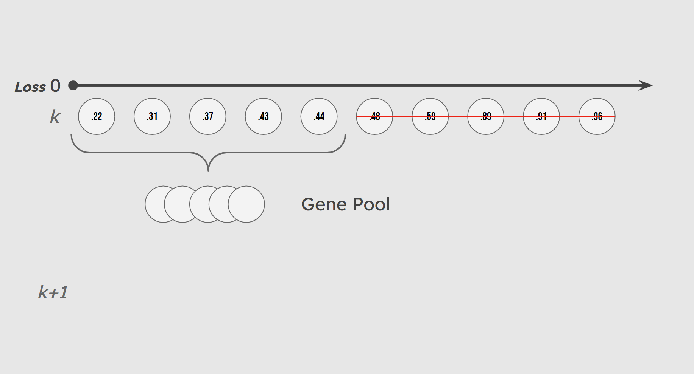
Illustration of Gene Pool Selection
Mirroring the random nature of evolution, we incorporate some chance in the makeup of our gene pool. A small number of lower-performing individuals (10% by default) are included in the gene pool with low probability. These individuals, whom we call sneakers, introduce genetic variation that helps maintain a diversified population and prevents premature convergence.
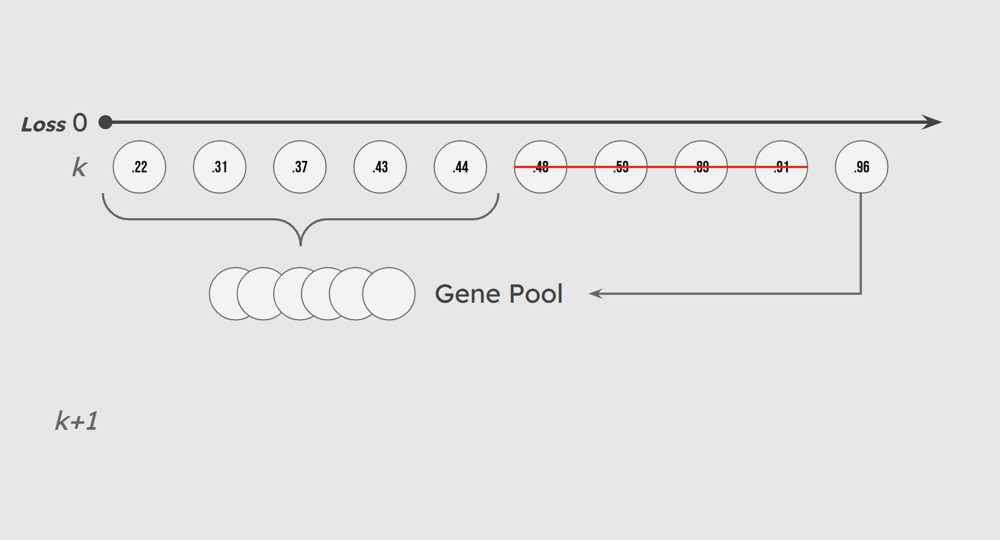
Illustration of Sneaker Population
Finally, we employ an elitist strategy to preserve our high-performing solutions. Each generation, a percentage of the top performers based purely on cross-entropy loss are included in the gene pool and also survive unchanged and unmutated to the next generation. This preserves the integrity of the best solutions by keeping a lineage of high-performing individuals.
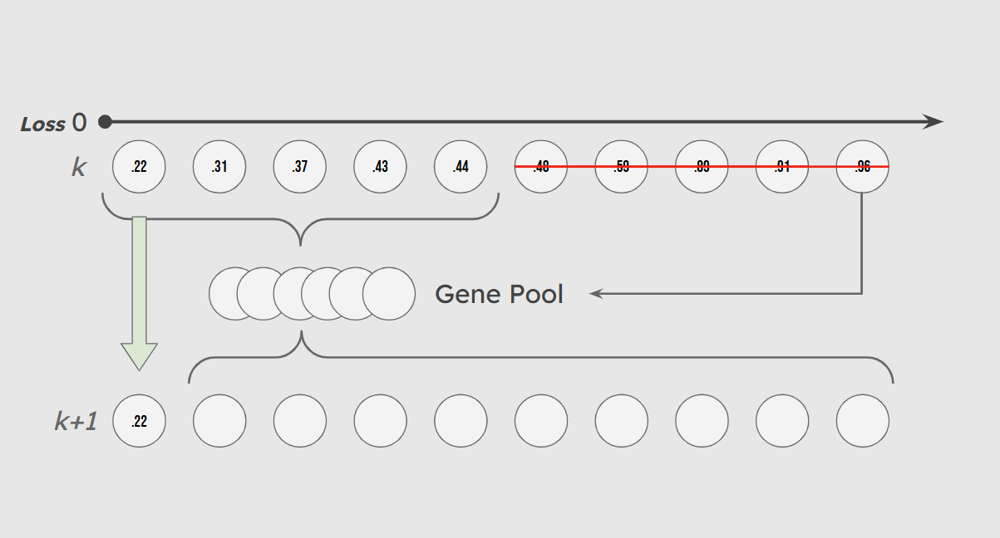
Overview of New Generation Gene Makeup
Inheritance and Parent Quantity:
At each iteration of our evolutionary optimization, following the creation of a ‘gene pool’ in the selection stage, the population must be replenished with new individuals. There are three ways that this can be accomplished. 1: All new individuals are new randomized weight vectors with no input from the gene pool. 2: Each new individual has a single parent randomly selected from the gene pool from which its weights are inherited with random mutations. 3: Each individual has n parents randomly selected from the gene pool. Each feature weight is then inherited from the corresponding feature weight of a random one of its parents.
The first scenario, with no inherited weight vectors, is a baseline against which our true evolutionary models can be tested. This is not truly evolution, as it does not include any heritability of fitness for new individuals in the population Lewontin (1970).
The second Scenario, includes heritability of fitness, but with only a single parent for each child individual, the diversity can be expected to be more limited.
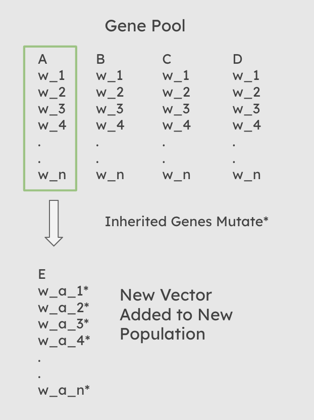
Diagram of Inheritance when num_parents = 1
The Third Scenario, allows for a slightly reduced heritability of fitness, with the addition of diverse new individuals produced with each generation. The diversity rate is specifically limitted by the mutation_rate and mutation_intensity hyperparameters.
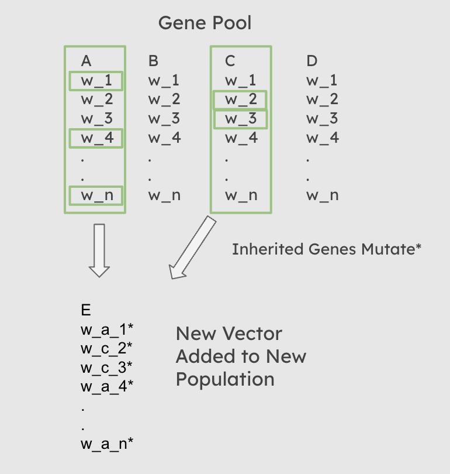
Diagram of Inheritance when num_parents = 2
Functionally, this process occurs after selection has occured, and an overall gene pool of parents has been created. A random sampling with replacement is then performed on that gene pool, in which each new child is assigned n, the value of the num_parents hyperparameter passed to the function, parents from the gene pool. For each weight in each child’s weight vector, a random one of that child’s n parents is then chosen from which it inherits that specific weight. If num_parents = 0, then every child recieves a completely random weight vector. Once the weights have been assigned, the child weight vector is then mutated.
As discussed in the results section, the choice of the number of parents can have a significant impact on loss, accuracy, and diversity.
Hybridizing evolution with gradient descent:
Our approach to evolutionary optimization incorporates a gradient-based refinement step that allows individuals to local optimize their performance (slightly) after being created. In essence, this hybrid evolutionary-gradient approach combines the global search strengths of evolutionary algorithms with the precise, local updates enabled by backpropagation. For each new individual generated during the evolutionary step, we apply a single gradient update to refine its weights. This is accomplished using a method implemented within the model that performs a forward pass, calculates cross-entropy, and uses PyTorch’s automatic differentiation to compute gradients. Weights are then updated according to the direction of the negative gradient, and scaled by a learning rate set to 0.5.
The backpropagation step is called once per individual in the evolutionary loop, immediately after crossover and mutation have produced a new weight vector candidate. The updated individual is then re-inserted into the population. By integrating this light update of gradient descent, the optimizer benefits from enhancing convergence rates - while still being able to prioritize diversity - with fewer generations of evolution.
Computing Diversity and Diversity-Based Loss:
Our evolutionary optimization implementation includes a mechanism for encouraging population diversity by directly incorporating a diversity term into the model’s loss function. Diversity is measured over the entire population of weight vectors, with four distinct methods implemented to quantify it. These include Euclidean distance, cosine dissimilarity, standard deviation, and variance. The Euclidean distance metric calculates the mean spatial difference between every pair of individuals in the population. Cosine dissimilarity measures the angular dissimilarity of weight vectors by computing one mines the cosine similarity between weight vectors. The standard deviation and variance metrics, on the other hand, operate across the whole population of weight vectors by computing the average distribution/variance of all weight vectors within a generation.
Once computed, the diversity score is used to modify the model’s loss. Specifically, during each evaluation of an individual weight vector in the population, the standard cross-entropy loss is calculated and then a diversity term is subtracted from it. This diversity term equals the above mentioned diversity value scaled by a user-set diversity coefficient. The effect of this subtraction is that models with higher diversity scores receive a lower total loss, incentivizing the optimizer to explore a broader range of solutions. This diversity-aware loss is only applied when explicitly enabled through a boolean flag in the model, giving flexibility for experiments that compare/evaluate the performance of diversity-based and non-diversity based evolutionary optimization.
Adjustment from binary to multi-class classification:
Because our target task is classification on the MNIST dataset - which involves 10 possible output classes (digits 0 through 9), we implemented multiclass classification using Pytorch’s CrossEntropyLoss function. Unlike binary cross-entropy, which assumes a binary classification problem and compares scalar outputs to binary labels, cross-entropy loss compares a vector of probabilities (logits) against a single target value label. This function internally applies a softmax operation which evaluates the likelihood of each logit being the right output class.
In our implementation, the CrossEntropyLoss function is used in both the model’s forward loss evaluation and backpropagation step. This ensures that each prediction is treated as a multiclass decision and that the model can properly learn to distinguish between all 10 classes in the MNIST dataset.
Mutation Methods:
One thing that we created in our vanilla EVO optimizer was a random mutation mechanism. This mutation mechanism let’s us assign a small probability that each of the weight’s entries’ values can be nudged by a certain amount positively or negatively. This nudge and its intensity is modeled by a normal distribution around the current value, and what we call “Mutation Intensity” is the standard deviation of that normal distribution. This ensures that we are constantly updating our weights randomly, and that there is a chance for weights to get better. What we noticed is that only using normal distribution might not be sufficient in achieving fast convergence. Because the normal distribution’s tails flatten with the X-axis quickly, it does not give the slightest opportunity for the model to get an aggressive nudge.
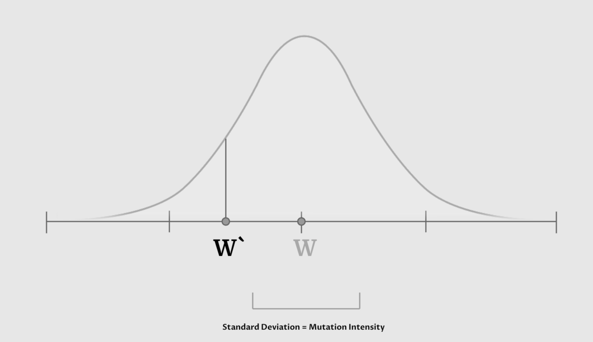
This led us to explore different distributions that also share the characteristic that ensures the nudge is usually not too aggressive, but also allows ever so rarely for it to change the weight’s entry significantly. This distribution that we introduced is the Laplacian distribution.
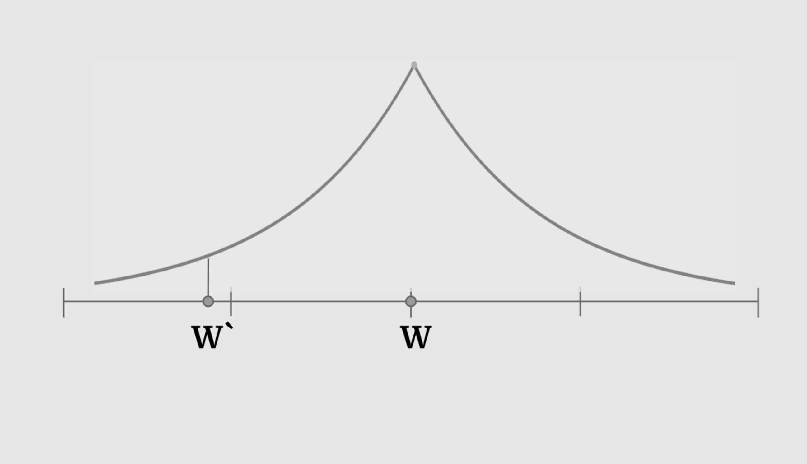
This became another hyperparameter that allows us to see how different mutation methods affect different models that our EVO optimizer tries to solve.
Results
Choices in Selection Processes:
By default, we select the best 50% of the population to enter the gene pool, however, this is a hyperparameter that users can play with. We conducted some experiments on a small subset of 1000 digits from the MNIST dataset to examine how different gene pool sizes (10%–90% of the population) would affect our accuracy, loss, and diversity over 500 generations.

Gene Pool Size vs Accuracy

Gene Pool Size vs Loss

Gene Pool Size vs Diversity
There are several interesting things to note about these figures. Focusing on the extremes first, only picking 10% of the best individuals is advantageous if we look purely at accuracy. However, this came at the cost of significantly reducing diversity, with such a small portion of the population passing through at each generation. Having too homogeneous a population can lead to getting stuck in local minima without exploring the wider loss landscape. On the other hand, having too many members of the population reproduce increases exploration of the loss landscape, but reduces selection pressure, as individuals with suboptimal solutions continue to reproduce. We can see this illustrated above as the accuracy lags far behind all of the other gene pool sizes. Keeping the best half performed is a strong middle ground with comparatively great accuracy, second only to keeping the top 10%, while remaining diverse.
We also investigated the effects of varying the probability that “sneakers”—individuals from the bottom 10% of the population—could enter the gene pool. We tested probabilities from 0–45%.

Sneaker Probability vs Accuracy

Sneaker Probability vs Loss

Sneaker Probability vs Diversity
Interestingly, across a range of sneaker probabilities, we didn’t observe much variation in loss or diversity. So it doesn’t impact our learning dynamics to a noticeable degree. However, having a 45% sneaker probability performed quite well, accuracy-wise. This may be a reflection of random variation of our dataset or starting genepool, but it may also suggest that a degree of genetic noise can occasionally help guide the population out of local minima. In future experiments, it would be insightful to set the hyperparameter to be above 50% and see the results.
Finally, we explored the impacts of elitism by varying the percentage of top-performing individuals who we carried unchanged to the next generation.

Elitist Population Size vs Accuracy

Elitist Population Size vs Loss

Elitist Population Size vs Diversity
When we have too many elites, we slow down evolutionary convergence. We aren’t introducing enough change from generation to generation to explore the landscape and improve our solution. We can see evidence of this in our stunted accuracy, low diversity, and higher loss when we increase the size of our elite population. However, when we eliminate elites or keep only 5%, we see noticeable improvements. Our loss is converging faster, we maintain a diverse population, and our accuracies after 500 generations are the highest. Keeping the elite population helps our accuracy, outperforming the population without elites by over 5% over 500 generations. Overall, we observed that on MNIST, modest elitism provides a valuable balance between preserving high-quality solutions and allowing diversity within the population.
Inheritance and Parent Quantity:
Two experiments were performed to explore the limitations and strengths of different inheritance methods, specifically the adjustment in the number of parents from which each child weight vector receives it’s own weight vector values.
For both experiments below hyperparameters that were held constant were:
-Survivor Ratio: 0.1
-Fitness Ratio: 0.5
-Sneaker Probability: 0.01
-Sneakers ratio: 0.1
-mutation rate: 0.05
-mutation intensity: 0.05
Generated Data Experiment:
This generated data experiment explores the performance of our model when varying the num_parents hyperparameter. A multi parent classification experiment was run on generated 2 dimensional data with 0.2 noise and 300 points. The accuracy, loss, and Euclidean diversity was tracked across 300 iterations. The experiment was run with the hyperparameter num_parents set to 0, 1, 2, 3, 5, and 10.
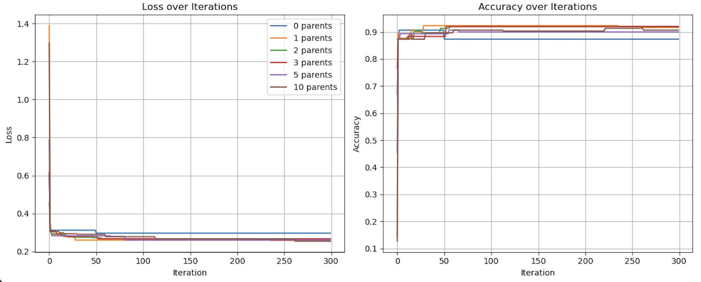
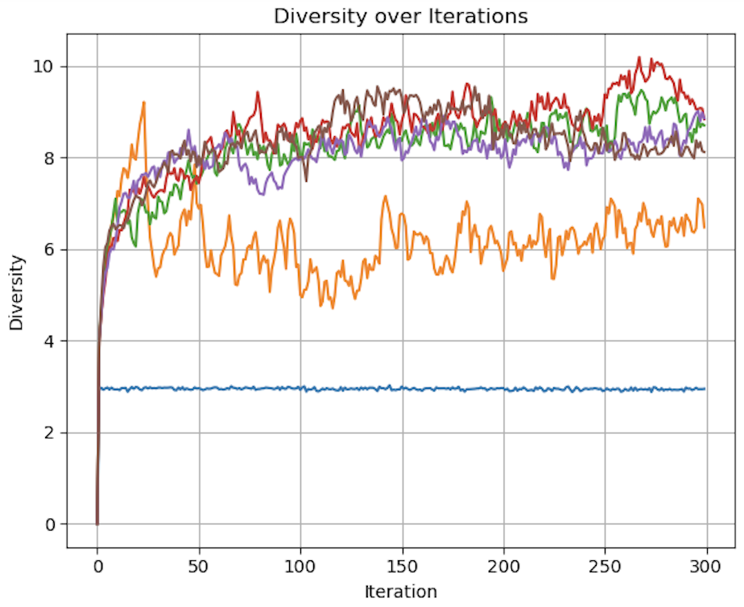Figures demonstrating loss, diversity, and accuracy performance of Evolutionary Optimization on Generated data using 0, 1, 2, 3, 5, and 10 parents over 300 iterations
As seen in the above visualization, Loss and Accuracy were comparable across all quantities of parents, while diversity varied significantly. In particular, with num_parents set to 0 and to a lesser extent 1, diversity was much lower than all other quantities of parents. The accuracy of the 0 parent model also performed worse than the other models over more iterations. With 0 parents evolution is conceptually replaced by random chance. The heritability, defined as a requirement for evolution by Lewontin (1970), is eliminated from the process.
While this had a much smaller impact on this relatively simple experiment of generated data, the implications on a much more complex classification problem, such as MNIST, could be significant.
MNIST Experiment:
A similar, more complex experiment performed on a subset 1000 images from the MNIST dataset tested the accuracy, loss, and diversity of num_parents = 0, 1, 2, 5, 10 over 1000 iterations. As a significantly more complex classification problem, the strengths of including more parents become much clearer.
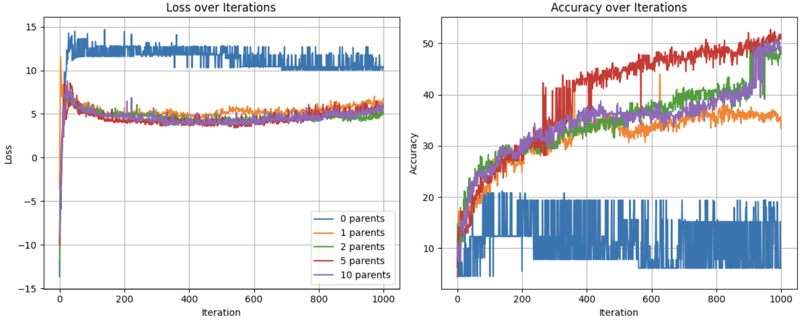
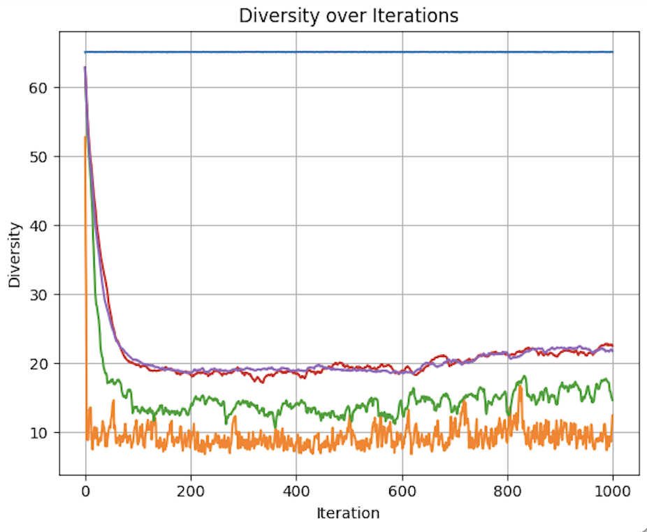
Figures demonstrating loss, diversity, and accuracy performance of Evolutionary Optimization on a Subset of the MNIST dataset using 0, 1, 2, 5, and 10 parents over 1,000 iterations
The benefits of inheritance are clear, as the zero parent model has a significantly higher loss and lower accuracy throughout the 1000 iterations compared to all other models.
Starting with loss, we can see that the loss for all test groups are relatively similar with the exception of num_parents = 0.
With regards to accuracy, we see a more nuanced picture. 0 parents performs poorly throughout the experiment, never reaching 21% accuracy. 1 parent has logarithmic like improvement in accuracy at around 35%. All higher quantities of parents follow a similar trajectory, but with major jumps in accuracy breaking the logarithmic like trend. This can be better understood by looking at diversity levels.
Due to the random nature of the weight vectors for the 0-parent group, the diversity is constant and extremely high at 65.124. For all other groups, it is clearly shown that more parents results in maintained diversity. As selection occurs, and the population is replenished with weight vectors inherited from the gene pool, diversity decreases overall. But by allowing for more varied combinations from that gene pool, some level of diversity is preserved. This appears to have diminishing benefits as demonstrated by the similar diversity for both 5 and 10 parents.
This becomes a problem of optimizing the heritability of fitness and the phenotypic variation mentioned by Lewontin (1970). fewer parents means more pure inheritance of fitness, as the child will more closely resemble its parents. It also means less phenotypic diversity, as completely new weight vectors are less likely to emerge. The opposite with regards to both phenotypic variation and fitness heritability applies. The benefits of multi-parent inheritance are demonstrated by the declining improvement in accuracy when num_parents = 1. The lower diversity compared to the other models, and the importance of diversity in evolutionary algorithms in allowing for the exploration of the solution space, results in poorer performance of the single parent model. A single parent allows for the inheritance of fitness,leading to better performance compared to the 0 parent model Lewontin (1970). However, it does not allow for large enough variation in fitness. With lower diversity, the 1 parent model is less likely to find a global minimum compared to the 2+ parent models. While it does find some form of a local minimum, the lack of diversity results in a drop off in improvement at around 600 iterations, while the models with 2, 5, and 10 parents continue to have spikes in improvement.
In the context of classification of the MNIST dataset, evolutionary models benefit from the added diversity resulting from the use of larger quantities of parents contributing weights to each new child in the subsequent generation. While more computing power, and more iterations are required to truly optimize this hyperparameter, these experiments clearly demonstrate the benefits of multi-parent inheritance.
Quantifying Diversity and Diversity-Based Loss:
This section evaluates the effect of diversity-aware loss functions in evolutionary training of a neural network classifier on a subset of the MNIST handwritten dataset. We experimented with four diversity metrics - Euclidean Distance, Cosine Dissimilarity, Standard Deviation (STD) and variance - and measured their influence on test accuracy, cross-entropy loss, and diversity levels in our weight population over 200 generations. Additional hyperparameter tuning was performed for the Cosine diversity metric to explore how mutation rate, mutation intensity, population size, and diversity coefficient influence outcomes.
The first experiment (figure 1) compared the test accuracy, loss, and normalized diversity across all four diversity metrics under a fixed training setup. All metrics enabled the model to reach between 75%-81% accuracy over 200 generations, with all other hyperparameters held constant. euclidean distance and STD slightly outperformed others in final diversity. All methods reduced loss substantially within 60 generations. When it came to Normalized diversity, all metrics except for, interestingly, cosine dissimilarity between weight vectors increased/maintained high diversity over time. Cosine dissimilarity diversity rapidly decayed to near-zero within 100 generations, while STD, variance and euclidean distance maintained high diversity levels, suggesting that cosine may be more prone to premature convergence or intrinsically mediates the impact of diverse weight populations.
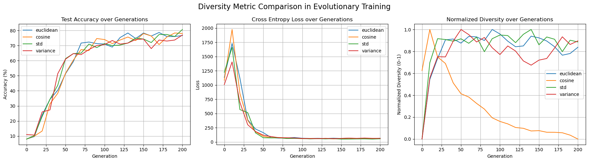
Figure 1: Comparing test accuracy, loss, and normalized diversity values for all 4 diversity metrics.
To better understand the behavior of the cosine dissimilarity metric, we ran additional training with varied diversity coefficients, population sizes, and mutation hyperparameters. The default hyperparameters used were population size 50, mutation rate 0.4, mutation intensity 0.5 and diversity coefficient 0.1. Increasing the diversity coefficient to 0.3 (figure 4) significantly improved diversity values - up to 0.2 - over each generation, confirming that the penalty term has a regulating effect on population diversity. When the diversity coefficient was set to 0.0 (figure 3), the model still trained to reasonable accuracy but showed completely flat diversity values, indicating the diversity term is implemented correctly to at least affect our metric value. Increasing population size to 100 (figure 5) improved diversity over each generation, especially in the first 100 generations, but did not substantially improve test accuracy. This suggests diminishing returns from larger populations in this setting. Raising mutation rate to 0.7 and intensity to 0.8 (figure 6) had a negligible to slightly positive impact on accuracy while maintaining diversity at moderate levels. Accuracy did experience more noisiness under these conditions, but ultimately achieved reasonable levels.
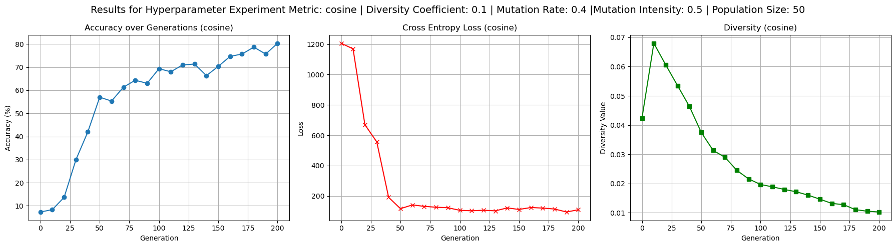
Figure 2: Baseline experiment outputs to provide reference test accuracy, loss, and diversity values for cosine driven loss.
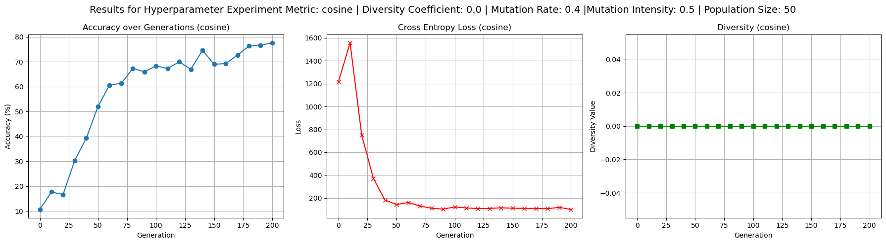
Figure 3: Confirming working implementation of diversity coefficient’s effect on diversity based loss by setting diversity coefficient to 0.0
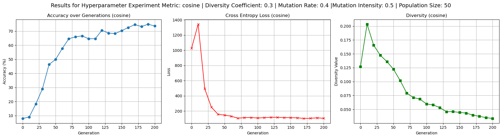
Figure 4: Results showing the effects of increased diversity coefficient of 0.3 - i.e. higher effect of diversity punishment/reward on loss - on test accuracy, loss, and diversity values.
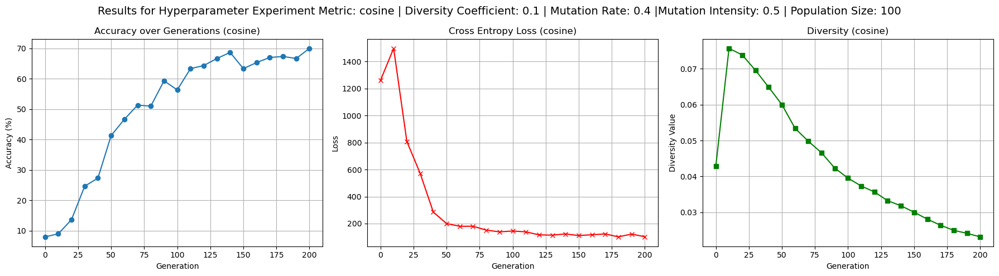
Figure 5: Results for increased population size of 100 weight vectors on test accuracy, loss, and diversity values.
Figure 6: Results for impact of high mutation rate and mutation intensity on test accuracy, loss, and diversity values.
In summary, all four diversity metrics led to successful convergence and comparable final test accuracies, with euclidean distance and STD slightly ahead. Cosine dissimilarity driven diversity tends to descend quickly, requiring further parameter tuning to explore what it takes to keep diversity high. Enabling the diversity penalty to loss had a clear and measurable effect on both training behavior and final diversity levels, validating its implementation. Mutation and population hyperparameters affected convergence stability and final accuracy but had less influence than the choice of diversity metric.
This study was constrained by computational limitations, which restricted the breadth of hyperparameter combinations we could explore. In particular, both the population size and the number of generations were limited in order to keep training time feasible. Larger populations and longer training schedules could potentially yield more robust insights into the effects of diversity-aware loss function. Further investigation into the behavior of cosine dissimilarity is warranted. Across multiple experiments we observed a consistent decline in diversity when using this metric. One possible explanation for this is that cosine dissimilarity only measures angular differences between vectors, ignoring their magnitudes. As a result, the population may converge to a set of similarly oriented but differently scaled vectors, which could be interpreted as low diversity by this metric. This limitation could implicitly constrain the optimizer’s ability to maintain variation during training, and future work could test this hypothesis more directly or explore hybrid metrics that include both angular and magnitude components. Additionally, we were limited in the size of training and test batches, which may influence generalization performance. It would be valuable to evaluate how increasing batch size or dataset subset size impact both diversity value and resulting model accuracy. Please note, all of these experiementes were run on a hybridized version of the evolution optimized DNNs which included, for every step of training one gradient descent step on each weight vector. This was done in hopes to reduce runtimes without straying too far from pure evolution. Pure evolution, we speculated, would have needed to require high data inputs, generation numbers, and population sizes to produce valuable results, which did not fit the computational capacities of our computers, nor our time constraints.
Final MNIST Results:
After combining all of our implementations together, we trained a deep neural network with layers [764,32,10] to classify our MNIST dataset. We settled on the following hyperparameters:
model.diversity_coeff = 0.2
optimizer = EvolutionOptimizer(model)
optimizer.set_population_size(200)
optimizer.use_backprop = False
optimizer.set_survivors_ratio(0.1)
optimizer.set_fitness_ratio(0.5)
optimizer.set_sneaker_prob(0)
optimizer.set_mutation_intensity(0.05)
optimizer.mutation_rate = 0.05
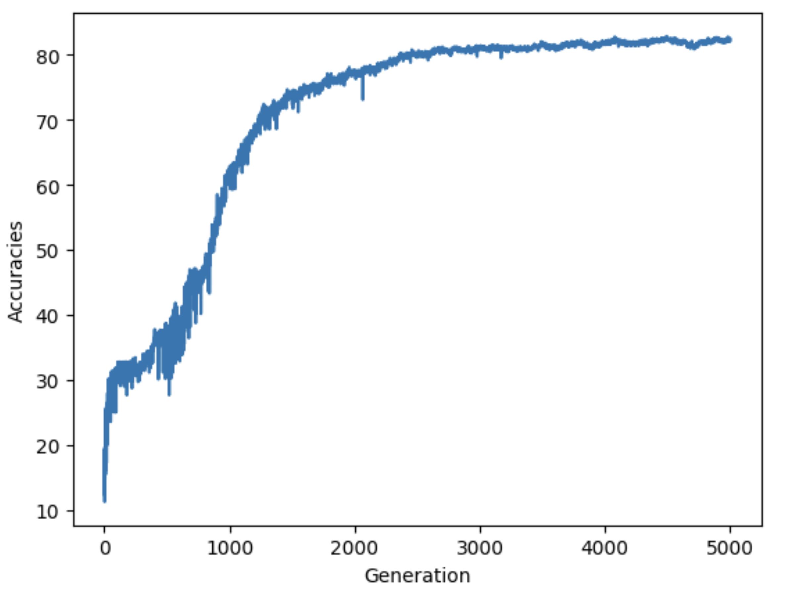
The plot above shows that the accuracy rapidly increases during the early generations, indicating that the evolutionary algorithm quickly identifies promising weight vectors, significantly reducing the initial error. This is likely because the selection criteria is too strict so it rapidly eliminates poorly performing members of the population. The curve starts to smooth out, reflecting a deceleration in accuracy improvement as the optimizer converges on better solutions. After around 2000 generations, the accuracy curve stabilizes, indicating that the optimizer has reached a near-optimal solution for the given problem. The final accuracy appears to stabilize around 82%, suggesting that the current hyperparameter settings and genetic operators are effective but may have room for further optimization, possibly through adjustments to mutation rates, diversity coefficients, or parent selection mechanisms.
Concluding Discussion:
As we combined all of our implementations of various evolutionary components, and created our unified optimizer that has significant flexibility in deciding the environment where our weights can evolve to solve the ML problems over time, we were ready to test this optimizer at a famous problem for deep neural networks: Classifying handwritten digits. Tweaking many of our hyperparameters lead to significantly different converging speeds, diversity metrics, and overall performance. This flexibility can be helpful in tailoring our algorithm to work in different context and on different models.
Our intention from the beginning was to simulate how living creatures solve the problem of survival: Evolution. What encouraged us to explore this algorithm is the beauty of how living beings have evolved to solve the same problems very differently. This diversity that exist in nature is what got us thinking about ways we could achieve this concept in optimizing machine learning models on different datasets. If we can create a population of weights that can reproduce over time, and spread their genes and cross it with one another, what can we notice about the diversity of their solutions? This took us on a journey of simulating this natural process, abstracting it into simpler components, and specifying it to our context.
Our project worked in many ways: our EVO optimizer managed to get the population to converge through random mutation, and maintain diversity by adjusting the diversity coefficient hyperparameter. We did however see a natural decay in diversity as the exploration phase ends and the exploitation phase begins where the population begin to converge around good solutions it found in the initial phase. Beyond the scope of the optimizer, our project worked in a sense that it provided us with the opportunity to investigate, design, and implement a complex environment for evolution. This has been the project that taught me at least the most about object oriented programming, and has taught us a lot about how to write legible code that will be built on by others.
Our results are comparable to other evolutionary optimization algorithms in terms of convergence speed and diversity emphasis, however, different implementations have allowed for even more complex design decisions of the environment, more complex selection criteria (like tournament style), adaptive mutation rate, limitations on the mating process. These added complexity unlocks many different combinations of hyperparameters that outperform our simple-er implementation.
If we had more time, we would definitely work on improving speed. Currently, our code does not fully utilize GPU. There are a few python for-loops when popping our populations based on total loss and cross entropy loss. These are operations that, when vectorized, could speed up the training process significantly. In addition, we can add more design options for more complex evolutionary algorithms. Also, we would perform a grid search to find the best hyperparameters that would optimize for a deep neural network for handwritten MNIST dataset in terms of accuracy and diversity. Finally, we would implement an inference mechanism that would classify data using majority voting, assuming that the diversity in the population allows for a broader knowledge base to solve the problem, i.e, it would be interesting to see if the phenomenon of the wisdom of the crowd emerges under our current evolutionary algorithm within a population.
Group Contributions:
Lukka:
As a unit, the whole team contributed to the conceptualization and the early stages of building a working prototype. Lukka worked mainly on implementing, refining, and exploring the selection mechanisms in our evolutionary model. he also helped integrate the Laplacian mutation distribution. Lukka also helped include and streamline my work and the work of others into a central working file. This was work that helped build the base of how we would handle our object-oriented programming approach and handle tuning hyperparameters. He also spent considerable effort and time getting MNIST to run correctly on the Middlebury cluster to facilitate larger-scale experimentation. In all the team meetings, we all spent time digging into one another’s code, learning and helping on implementation, debugging, and developing conceptual frameworks.
Jiffy:
For this project, Jiffy contributed to both the conceptual development and the technical implementation of our evolutionary optimization framework. Early in the project, je created a demo notebook (evolution_demo_warmup.ipynb) that introduced the basic principles of evolutionary algorithms using synthetic data, aiming to outline a clear conceptual framework of evolution’s purpose and potential in our project. Jiffy was primarily responsible for implementing and optimizing the diversity-aware loss framework, including vectorized versions of the Euclidean distance and cosine dissimilarity metrics, as well as additional metrics based on standard deviation and variance. He added support for toggling these metrics and integrating them into the final loss calculation. Jiffy also extended our codebase to support multiclass classification, enabling us to apply our models to the MNIST dataset. Much of Jiffy’s experimentation involved running classification trials with varying diversity metrics and hyperparameters - mutation rate, intensity, and diversity coefficient - which he documented in a jupyter notebook (ExploringDiversity.ipynb). Jiffy wrote an initial training logic and data loading code for MNIST, and developed visualization tools using matplotlib to track accuracy, loss, and diversity across generations. He also implemented the hybrid optimization step, which combines evolution with gradient descent via backpropagation. For the final blog post, Jiffy focused on writing detailed technical explanations of the algorithmic components I implemented, along with reporting and analyzing the results of my experiments. This includes the materials/methods section on hybridizing evolution with gradient descent, computing diversity and how diversity-based loss was implemented, and the transition from binary to multiclass classification. It also includes the results writeup for ‘Quantifying Diversity and Diversity-based Loss’.
James:
James’ main contribution to this project was the creation, implementation, and experimentation on the benefits and limitations of adjusting the inheritance process, in terms of how many parents each child’s weight vector has. This included identifying scholarly sources which provided a framework for understanding how each change to our hyperparameters, and in the case of inheritance specifically, in the number of parents influences the forces of evolution Lewontin (1970). The majority his work is found in the multi-parent and multi-parent2 folders, although the important changes to the evo class were eventually merged with the blog-post EVO class. While the most important contributions can be found in /multi-parent2/MultiParent.ipynb, James spent considerable time working to overcome computational limitations of my computer and then working to have my code run on ADA. James wrote the abstract, the introduction, the values statement, and the Inheritance and Parent Quantity subsections of the Hyperparameter and results sections.
Yahya:
For this project, I contributed to both the conceptual foundation and technical implementation of our evolutionary optimization framework. Early in the project, I helped conceptualize and explain various mathematical approaches to designing the optimizer, providing the initial direction for our implementations. I also supplied resources to support my teammates in understanding the theoretical aspects of evolutionary algorithms. I implemented a proof-of-concept version of the optimizer, integrating basic mutation, crossover, and selection mechanisms, which served as the foundation for our more complex final implementation. This included designing and implementing the core structure of the optimizer, which became the base for further development. I also investigated different diversity metrics and incorporated them as terms in the loss function to maintain diverse populations and reduce the risk of premature convergence. I designed and refined the OOP structure throughout the project. Additionally, I designed the mutation mechanism and introduced a Laplacian distribution as an alternative to Gaussian mutation, allowing for a more varied exploration of the solution space. To address computational bottlenecks, I collaborated with Professor Vaccari to set up scripts for running Jupyter servers on Middlebury’s GPU nodes, resolving runtime issues for the team. Finally, I helped assemble the final version of the EVO optimizer and experimented with different hyperparameter combinations to fine-tune the model and achieve the results presented in our report.
Personal Reflection:
Working on this project taught me a lot about the process of researching, implementing, and communicating complex technical ideas. One of the main things I learned was the importance of breaking down high-level concepts into smaller, more manageable components. This approach helped us gradually build our optimizer from a simple proof of concept to a fully functional evolutionary algorithm. I also realized the value of collaboration and resource sharing, as it allowed us to leverage each other’s strengths and knowledge to overcome challenges more effectively.
I feel more confident now in my ability to explore and build ideas from scratch, making design decisions that are well-supported by the math and theory I have learned. This project pushed me to think deeply about how different parts of an algorithm interact and how to balance exploration and exploitation in optimization. It also gave me the opportunity to practice object-oriented programming (OOP) at a much larger scale than I had before, teaching me how to structure code more effectively, write cleaner functions, and manage complex state changes over thousands of generations.
I feel satisfied with what we achieved as a team. We managed to build a functional evolutionary optimizer that successfully learned to classify handwritten digits, despite the computational challenges we faced. I met my initial goals of contributing to the conceptual foundation and implementing key components like mutation mechanisms and diversity metrics. However, I also see room for improvement, like optimizing our code for faster GPU performance and experimenting with more complex selection criteria.
Moving forward, I plan to carry this experience into my future projects and courses. It reinforced my understanding of OOP and deep learning, and gave me a better appreciation for the balance between exploration and exploitation in machine learning algorithms. I also learned the importance of clear communication, both within the team and when presenting technical work to a broader audience, which will be valuable as I continue my studies and pursue my career.